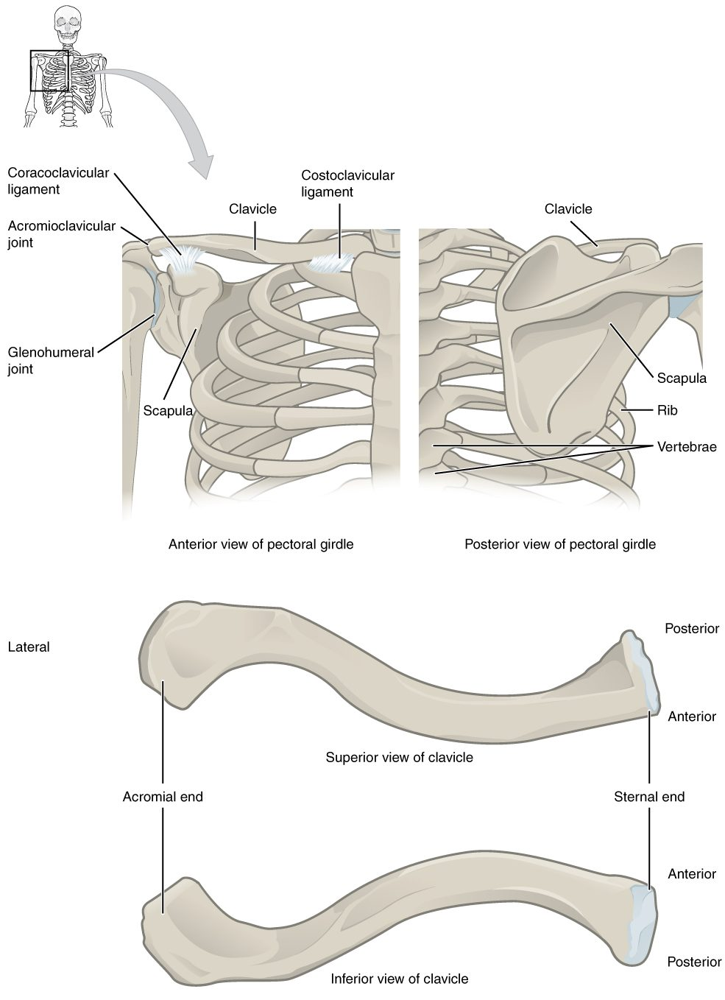
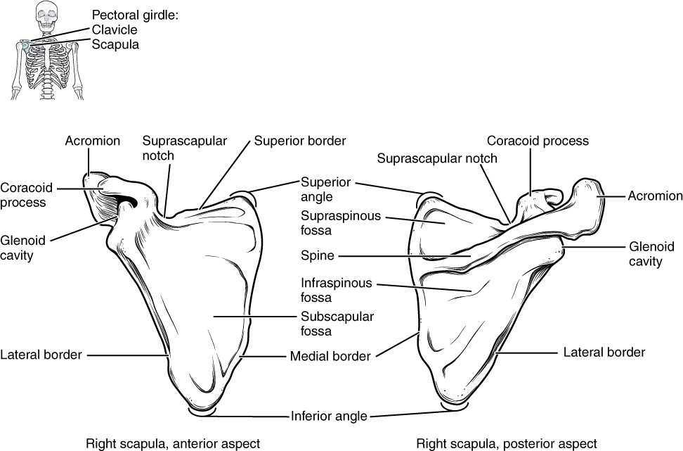
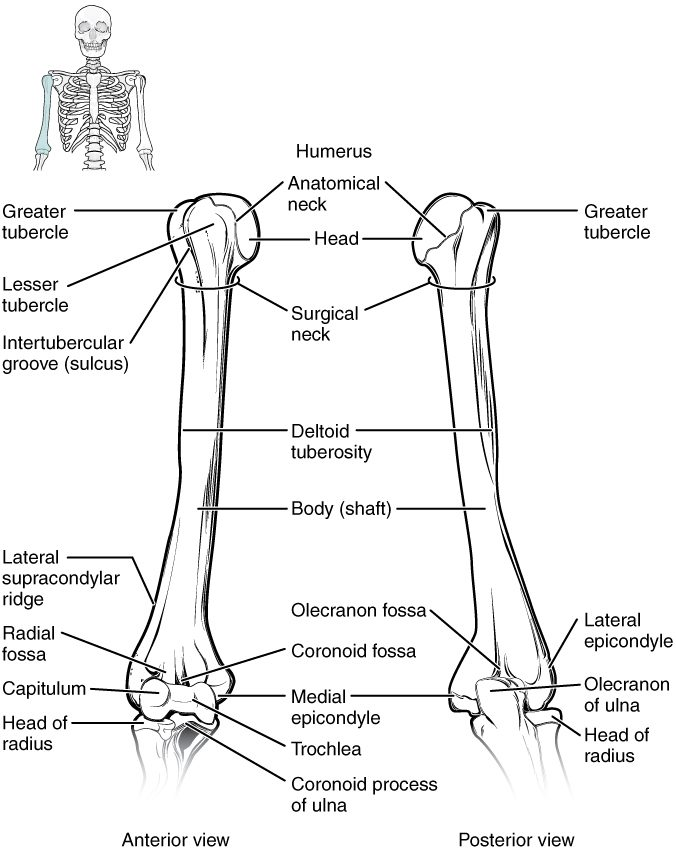
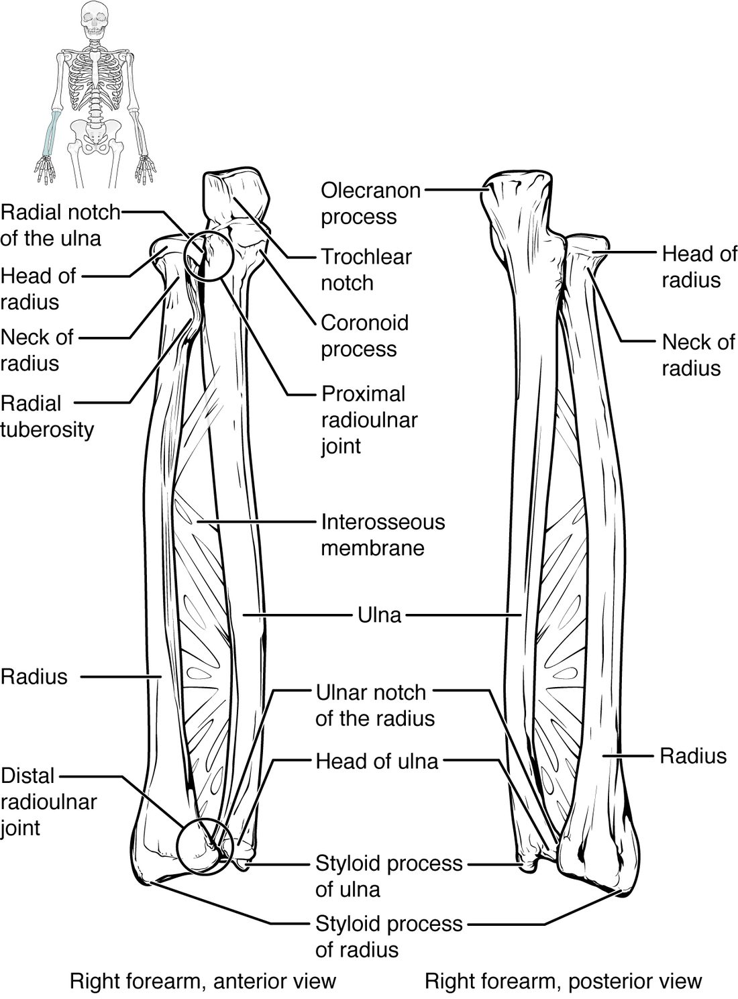
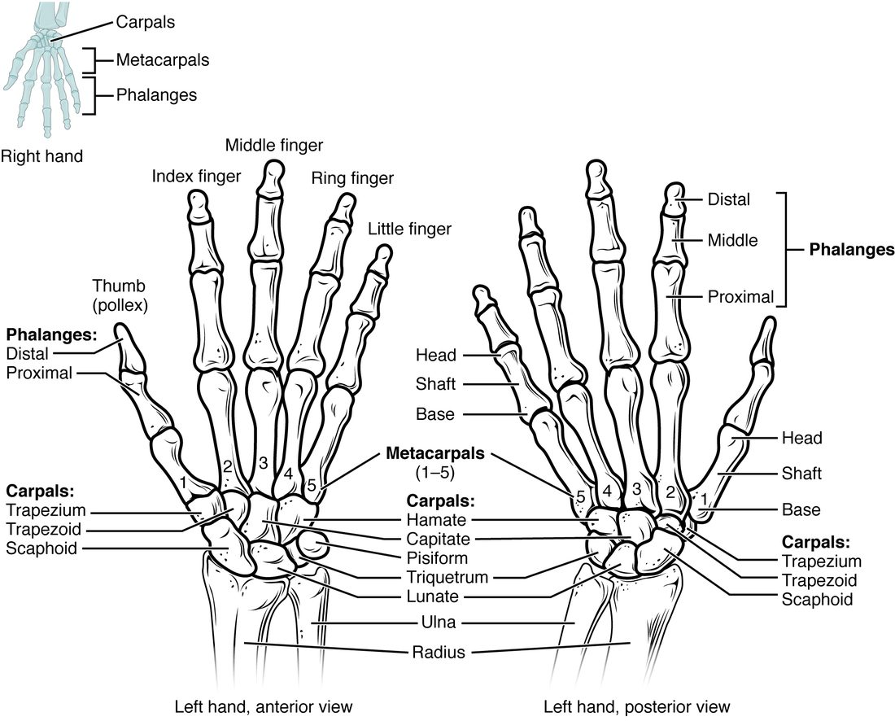
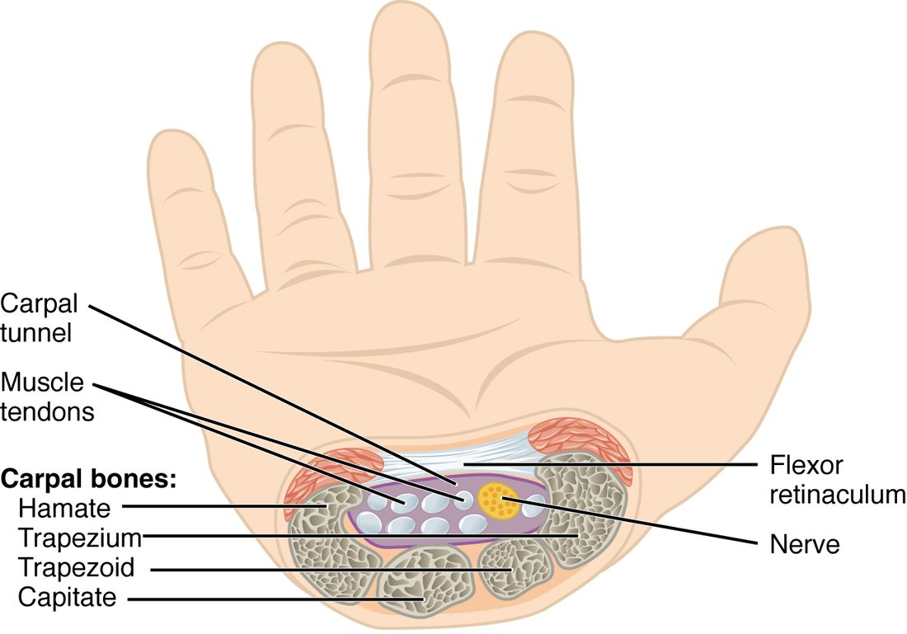

Your arm has to reach, lift, throw and hold a pen, all from a shoulder that barely touches your trunk. This page gives you the bones of the arm and hand labeled and explained: the two bones of the shoulder girdle, the humerus of the upper arm, the radius and ulna of the forearm, and the 27 bones of the wrist and hand. For each bone you will learn its landmarks and the injuries that happen where it is weakest.
The upper limb at a glance
Each upper limb is part of the appendicular skeleton. It has 30 bones, plus 2 more in the girdle that attaches it to the trunk. In anatomy, "arm" means only the part between the shoulder and the elbow; the part between the elbow and the wrist is the forearm.
- Shoulder girdle (2): the clavicle and the scapula.
- Arm (1): the humerus.
- Forearm (2): the radius and the ulna.
- Wrist and hand (27): 8 carpals, 5 metacarpals and 14 phalanges.
The pectoral girdle
The pectoral girdle (pector- = chest; also called the shoulder girdle) is the pair of bones on each side that attaches the arm to the trunk: the clavicle in front and the scapula behind (Figure 1). It is not a full ring. At the front, the clavicle meets the manubrium of the sternum. At the back, the scapula does not meet the vertebral column or the ribs at all. Muscles hold it against the back of the rib cage. That loose build lets the shoulder move freely, at the cost of stability.

The clavicle
The clavicle (clavicula = little key), the collarbone, is an S-shaped rod you can feel along its whole length at the base of your neck. Its rounded sternal end meets the manubrium. Its flat acromial end meets the acromion of the scapula at the top of the shoulder. The clavicle is the only bony link between the arm and the trunk, and it acts as a strut that holds the shoulder out to the side.
Because every push up the arm passes through this strut, a fall onto the shoulder or an outstretched hand often breaks it. It is one of the most commonly broken bones, usually in its middle part, where its two curves meet and the bone is thinnest.
The scapula
The scapula (scapula = shoulder blade) is a thin, triangular flat bone lying against the back of the rib cage, over ribs 2 to 7 (Figure 2). It has three borders (superior, medial and lateral) and three corners, and its landmarks are:
- The spine of the scapula, a ridge across the back of the bone that you can feel just below the top of your shoulder blade.
- The acromion (acr- = tip, omos = shoulder), also called the acromial process, the flat end of the spine that forms the bony tip of your shoulder. It meets the clavicle.
- The coracoid process (corac- = crow; -oid = like, for its beak shape), a hook that points forward under the clavicle. Muscles of the chest and arm anchor to it.
- The glenoid cavity (glen- = socket), a shallow oval socket on the outer corner. The head of the humerus fits into it. It is very shallow, which is one reason the shoulder moves so freely and dislocates more often than any other part of the body.
- Three hollows filled by muscles: the supraspinous fossa above the spine, the infraspinous fossa below the spine (both on the back), and the subscapular fossa (sub- = under), the whole front surface facing the ribs.

The humerus
The humerus (humerus = upper arm) is the long bone of the arm (Figure 3). Its landmarks, from top to bottom:
- The head of the humerus is the smooth, half-ball top that fits into the glenoid cavity.
- The anatomical neck is the narrow groove that rings the edge of the head.
- The greater tubercle is the large bump on the lateral side, and the lesser tubercle is the smaller bump on the front. Muscles that steady the shoulder anchor to both.
- The intertubercular groove (also called the bicipital groove) is the channel between the two tubercles. A tendon of a muscle on the front of the arm runs in it.
- The surgical neck is the narrowing of the shaft just below the tubercles. It is named for how often it breaks, especially in older adults with osteoporosis who fall onto the arm or shoulder.
- The deltoid tuberosity is a rough, V-shaped patch about halfway down the lateral side of the shaft. The big triangular muscle that caps the shoulder anchors here.
At the lower end, the humerus widens:
- The medial epicondyle of the humerus and the lateral epicondyle of the humerus are the knobs you can feel on the inner and outer sides of your elbow. The medial one is larger. Forearm muscles anchor to both.
- The capitulum (capit- = head; -ulum = little) is a rounded knob on the lateral side of the lower end. The head of the radius meets it.
- The trochlea (trochlea = pulley) is a spool-shaped surface on the medial side of the lower end. The ulna wraps around it.
- The olecranon fossa is a deep hollow on the back of the lower end. When you straighten your elbow, the tip of the ulna slots into it. A smaller hollow on the front receives the ulna's coronoid process when you bend the elbow.
| Anatomical neck | Surgical neck | |
|---|---|---|
| Where | The groove right at the edge of the head | The narrowing of the shaft below both tubercles |
| Above or below the tubercles? | Above | Below |
| Width of bone there | Wide: it rings the head | Narrow: the shaft |
| How often it breaks | Rarely | Often, especially in older adults |

The funny bone
When you bang the inner back of your elbow and feel a jolt down to your little finger, you have not hit a bone. You have hit a nerve. It runs in a groove on the back of the medial epicondyle, where only skin covers it, so a knock squeezes it against the bone.
The radius and ulna
The forearm has two long bones side by side (Figure 4). In anatomical position, with your palm forward, the ulna is on the medial, little-finger side and the radius is on the lateral, thumb side. A sheet of dense connective tissue joins their shafts along their length.
The ulna
The ulna (ulna = elbow) is the main bone of the elbow. At its top:
- The olecranon (olen- = elbow, cran- = head), also called the olecranon process, is the hooked point you lean on when you rest your elbow on a table.
- The trochlear notch is the large C-shaped notch facing forward. It wraps around the trochlea of the humerus, which lets the elbow bend and straighten like a hinge but not swing sideways.
- The coronoid process of the ulna is the lower lip of the notch, jutting forward.
At the wrist, the ulna is small. Its little head ends in the styloid process of the ulna, the bump you can see on the little-finger side of the back of your wrist.
The radius
The radius (radius = spoke of a wheel) is built the other way round: small at the elbow, wide at the wrist.
- The head of the radius is a disc at the top. Its hollow upper face meets the capitulum, and its rim spins against a small notch on the side of the ulna.
- The radial tuberosity is a rough bump just below the head, on the front and inner side. The tendon of the main muscle on the front of the arm anchors here.
- The wide lower end meets the carpals and carries most of the wrist. On its lateral side, the styloid process of the radius reaches farther down than the ulna's.
Turn your palm from facing up to facing down. The ulna stays still, held by its notch around the trochlea. The head of the radius spins in place at the elbow, and its lower end swings across the front of the ulna, carrying the hand with it. That is why the radius and not the ulna holds up the wrist and hand.
| Ulna | Radius | |
|---|---|---|
| Side of the forearm | Medial (little-finger side) | Lateral (thumb side) |
| Larger end | Upper end, at the elbow | Lower end, at the wrist |
| Main landmark at the elbow | Olecranon and trochlear notch | Disc-shaped head and radial tuberosity |
| Meets the humerus at | The trochlea | The capitulum |
| Main landmark at the wrist | Small head and styloid process | Wide end and styloid process |
| When the palm turns down | Stays still | Crosses over the ulna |
The most common forearm break is a fracture of the lower end of the radius, from falling onto an outstretched hand. When the broken end is pushed back, the wrist takes the shape of an upside-down dinner fork; this is a Colles fracture.

The bones of the hand
The wrist and hand have 27 bones in three groups (Figure 5).
The carpals
The eight carpals (carp- = wrist), or carpal bones, are short bones in two rows of four. From lateral (thumb side) to medial, in anatomical position:
- The proximal row: scaphoid (scaph- = boat), lunate (lun- = moon), triquetrum (triquetrus = three-cornered) and pisiform (pis- = pea). The scaphoid and lunate meet the radius.
- The distal row: trapezium (trapez- = little table), trapezoid (-oid = like, so table-like), capitate (capit- = head; the largest carpal) and hamate (ham- = hook, for the hook on its palm side).
A memory aid, in the same order: "Some Lovers Try Positions That They Can't Handle." Note which bone each "T" is: the trapezium sits under the thumb (both have an M), and the trapezoid sits beside it.
The pisiform is a sesamoid bone, a small bone that grows inside a tendon. You can feel it as a pea-sized knob at the base of the palm on the little-finger side.
The metacarpals and phalanges
- The five metacarpals (meta- = beyond, so "beyond the wrist"), or metacarpal bones, form the palm. They are numbered 1 to 5 from the thumb. Each has a base next to the carpals and a head at the far end; the heads are your knuckles when you make a fist.
- The fourteen phalanges (singular phalanx; phalanx = a row of soldiers) are the finger bones. The thumb, the pollex (pollex = thumb), has two: a proximal and a distal phalanx. Each finger has three: proximal, middle and distal.

Two common injuries
The scaphoid is the carpal broken most often. In a fall onto an outstretched hand, it takes the load between the radius and the hand and can snap across its narrow middle. Blood vessels enter it mainly at its far end, so a break can cut off the near piece's blood supply. Its bone cells may then die, and the break may never heal. A person with pain in the hollow at the base of the thumb after such a fall is splinted as if the scaphoid were broken, even when the first X-ray looks normal.
Punching a hard object with a closed fist often breaks the fifth metacarpal just behind its head, the knuckle of the little finger.
The carpal tunnel
On the palm side, the carpals form a U-shaped trough. A tough band of dense connective tissue, the flexor retinaculum (retinaculum = a band that holds back), stretches across the top of the U from one side of the wrist to the other. The trough and its roof make a tunnel, the carpal tunnel (Figure 6).
Nine tendons that bend the fingers and thumb, and one major nerve to the thumb side of the hand, pass through this tunnel into the hand. The tunnel's walls are bone and its roof is a tight band, so it cannot widen. If the tendons' linings swell, for example from repeated forceful wrist movements, the pressure inside rises and squeezes the nerve. The result is carpal tunnel syndrome: numbness and tingling in the thumb, index and middle fingers, often worse at night.

Summary
The pectoral girdle is the clavicle and scapula; the clavicle is the only bony link between the arm and the trunk, and the scapula carries the spine, acromion, coracoid process, glenoid cavity and three fossae. The humerus has a head, anatomical and surgical necks, greater and lesser tubercles with the intertubercular groove between them, a deltoid tuberosity, and at its lower end the epicondyles, capitulum, trochlea and olecranon fossa. The ulna (medial) is large at the elbow, with the olecranon and trochlear notch; the radius (lateral) is large at the wrist and crosses the ulna when the palm turns down. The hand has 8 carpals in two rows, 5 metacarpals and 14 phalanges, and the carpal tunnel, roofed by the flexor retinaculum, carries tendons and a nerve into the hand.